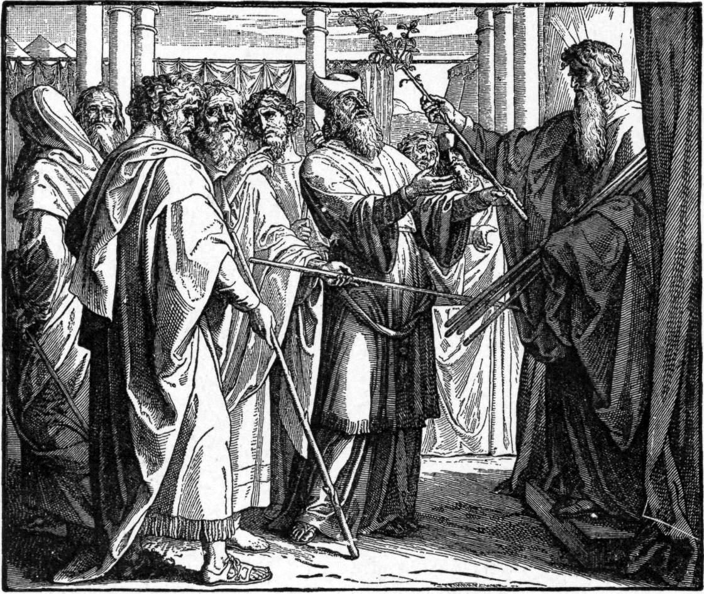

Números 17 — La Traducción Mister

El momento del v24: Moisés saca las doce varas de delante de Jehová y cada uno toma la suya. Moisés es la figura con rayos de luz a la derecha, con el haz de varas; el hombre de la mitra que levanta la única vara que ha echado hojas es Aarón. Todas las demás varas del grabado están rectas y muertas, que es el argumento entero del capítulo dibujado en un solo gesto. ⚠ Dos desviaciones honestas respecto del texto: el grabador se detiene en la flor y no le da almendras a la vara, aunque el v23 insiste en las cuatro etapas incluido el fruto maduro; y sitúa la escena entre columnas de piedra y no en una tienda, que es el siglo XIX imaginando un santuario en lugar del que describe Éxodo.
{kind=link}
Números 17:1-5 — los incensarios de los rebeldes se vuelven santos, y son batidos hasta ser la piel del altar
⚠ Primero, dónde está usted. Si busca este pasaje en una Biblia moderna no lo encontrará en Números 17. Allí está impreso como Números 16:36–50, y lo que las Biblias modernas llaman Números 17:1–13 son los vv16–28 de abajo. El capítulo hebreo va del 1 al 28 y contiene los dos episodios; la división moderna corta entre ellos y desplaza la numeración quince versículos. Esta traducción sigue la división masorética, como Números 16 anunció al detenerse en su v35.
Y lo primero que ocurre tras el fuego es una instrucción sobre recuperación. Eleazar ha de entrar en la quema y levantar los incensarios —el verbo es rum, el mismo levantar que da nombre a la terumá— y esparcir las brasas. La razón que se da es la que nadie espera: ki qadeshu, porque se han vuelto santos.
⚠ Léalo despacio, porque es la frase más sorprendente de los dos capítulos. Doscientos cincuenta hombres tomaron incensarios que no tenían derecho a sostener, en un desafío que el texto llama rebelión, y murieron por ello. Su equipo no se destruye ni se entierra. Se consagra, y la razón que se aduce es puramente procedimental: ki hiqrivum lifné Jehová, porque fueron presentados delante de Jehová. La santidad aquí es contagiosa e indiferente al motivo: se adhiere al objeto por dónde fue llevado, no por lo que pretendía quien lo llevaba. El bronce se bate luego hasta quedar plano y se convierte en la cubierta del altar, de modo que todo sacrificio que Israel ofrezca desde ese día se ofrece sobre una superficie hecha de la rebelión.
El b'nafshotam del v3 es una prueba en vivo de una decisión que este proyecto tomó dos capítulos atrás. La expresión es «con sus nefashot», y el estante se divide en tres. RV60 y RV 1909 leen «contra sus almas», igual que la KJV y la NWT 1984; la NVI «a costa de su vida», igual que la ASV, la NIV y la revisión de 2013 de la NWT; y dos lo resuelven de una tercera manera: Ginebra «that destroyed themselves» y la Douay-Rheims «in the deaths of the sinners», que es la Vulgata leyendo la frase como un momento y no como un precio. Esta traducción lee vidas, y la razón es la regla y no la votación: néfesh se vierte «alma» en estas páginas donde significa la PERSONA como sujeto de una pena, y «vida» donde significa la vida misma —como en Levítico 17:11, la vida que está en la sangre. Aquí es un precio: pecaron con sus vidas, y las vidas es lo que se pagó.
El v5 hace del enchapado del altar una advertencia y no un trofeo, y nombra al hombre del que advierte: que ningún extraño se acerque a quemar incienso, y no llegue a ser como Coré y como su compañía. Es el único lugar del capítulo que mira atrás y dice el nombre.
Números 17:6 — «vosotros habéis matado al pueblo de Jehová»: la acusación de la mañana siguiente
Un día. La tierra se ha cerrado sobre Datán y Abiram, el fuego se ha llevado a doscientos cincuenta jefes, y al día siguiente la congregación entera vuelve para decir que lo hicieron Moisés y Aarón. No que lo hiciera Dios y se equivocara: que lo hicieron los dos hombres. Attem hamittem et-am Jehová —habéis dado muerte al pueblo de Jehová— y la expresión que eligen para los muertos es la que hace que la acusación duela: no «los rebeldes», no «la compañía de Coré», sino el pueblo de Jehová. Todo el estante conserva la frase sin suavizarla, lo cual es notable: RV60 «vosotros habéis dado muerte al pueblo de Jehová», NVI «ustedes mataron al pueblo del Señor», KJV y ASV «ye have killed the people».
El verbo de la queja es lun, el de murmurar que ha recorrido Números 11, 14 y 16:11.
⚠ Y el v7 usa la raíz que usó Coré. B'hiqqahel ha-edá —cuando la congregación fue REUNIDA, de qahal, la misma raíz que Coré usó en 16:19 al reunir a la congregación contra Moisés. La multitud que Coré convocó se ha convocado ahora sola, sin él, y contra los mismos dos hombres. La muerte de los cabecillas no ha resuelto nada de la manifestación, que es exactamente por lo que va a hacer falta una segunda señal.
Números 17:11-13 — el incensario que mató a doscientos cincuenta hombres se lleva afuera para detener una plaga
⚠ El v10 es la frase de Números 16:21 dicha otra vez, y casi palabra por palabra. Compárense: 16:21 hibbadlu mittoj ha-edá ha-zot va-ajalé otam k'ragá; 17:10 heromu mittoj ha-edá ha-zot va-ajalé otam k'ragá. Difiere un verbo. Lo demás es idéntico, con un capítulo de por medio.
Lo que difiere es la respuesta. En el capítulo 16 Moisés y Aarón cayeron sobre sus rostros y discutieron: ¿pecará un solo hombre, y te airarás contra toda la congregación? Aquí caen sobre sus rostros y no dicen absolutamente nada. El texto no les da discurso. En vez de eso Moisés se vuelve y le da a Aarón una instrucción, y la intercesión deja de ser un argumento y se vuelve un encargo.
⚠ Y el encargo se cumple con un incensario. Este es el eje del capítulo y es fácil pasarlo por alto porque a estas alturas el objeto resulta corriente: majtá, la misma palabra, la misma cosa que sostenían doscientos cincuenta hombres cuando salió fuego y los consumió, y que Levítico 10:1 puso en manos de Nadab y Abihú. Aarón toma uno, lo llena de fuego del altar —el altar ahora enchapado con los incensarios de los muertos— y corre. El instrumento de la rebelión, el del juicio y el del rescate son el mismo instrumento. Lo que cambia es quién lo sostiene y de dónde vino el fuego.
«Y se puso entre los muertos y los vivos, y la plaga fue detenida.» ⚠ Y tres versiones invierten el orden. El hebreo es bein ha-metim u-vein ha-jayyim —los muertos nombrados primero, luego los vivos— y RV60, RV 1909, KJV, ASV y Ginebra lo conservan así, mientras que NVI, NIV y TLB imprimen «entre los vivos y los muertos». Es una inversión pequeña con un efecto real: el hebreo lo hace llegar desde el lado de los cadáveres y detenerse con los vivos delante. ⚠ La Douay-Rheims hace algo distinto y añade una cláusula que no está en el hebreo —«poniéndose entre los muertos y los vivos, ORÓ por el pueblo»—, supliendo justamente lo que el versículo calla.
Números 17:17 — doce varas, y la palabra hebrea para «vara» es también la palabra para «tribu»
Empieza la segunda señal, y todo su diseño descansa en un juego de palabras que el español no puede llevar. Matté significa vara —una rama cortada, un bastón de mando— y significa también TRIBU. Es la palabra corriente para las dos cosas, y este proyecto lleva imprimiéndola como «tribu» desde Números 1:4 (que aún no tiene página en español). Así que cuando Dios dice tomad doce mattot, uno por casa paterna, y escribid el nombre de cada uno en su matté, el hebreo está diciendo a la vez doce varas y doce tribus, y el objeto en la mano de cada jefe ES su tribu con su nombre escrito encima.
La palabra sale catorce veces en este capítulo. Ninguna versión puede conservarlo —«vara» y «tribu» son sencillamente palabras distintas— y todas imprimen «vara» y dejan ir el segundo sentido. Vale la pena saber que estaba, porque explica por qué la prueba toma la forma que toma: la pregunta sobre la mesa desde Números 16:1 ha sido qué tribu puede acercarse, y Dios la responde pidiendo las tribus mismas, en madera, de noche, a oscuras.
Números 17:23 — brotó, floreció una flor y maduró almendras: cuatro etapas en un versículo, y la palabra «flor» es la que Aarón lleva en la frente
El versículo no dice que la vara floreció. Dice que hizo cuatro cosas, en orden, en una noche: paraj —había brotado; vayyotzé feraj —echó un brote; vayyatzetz tzitz —floreció una flor; vayyigmol shqedim —maduró almendras. Un palo muerto haciendo una primavera entera entre una tarde y una mañana, y el hebreo insiste en las cuatro etapas en vez de resumirlas. Dos de las cuatro son pares cognados —un brote brotando, una flor floreciendo. El estante español conserva las cuatro donde el inglés suele comprimirlas: RV60 y RV 1909 «había reverdecido, y echado flores, y arrojado renuevos, y producido almendras». La NIV comprime, y es la única del estante que glosa el juego de palabras de la nota anterior añadiendo «la vara de Aarón, QUE REPRESENTABA A LA TRIBU DE LEVÍ». ⚠ La Douay-Rheims se expande en la dirección contraria e inventa un proceso que el hebreo no describe.
⚠ Y tzitz no es una palabra general para «flor». Comprobado contra la Biblia hebrea entera: el mismo sustantivo es lo que Éxodo 28:36 (ya en estas páginas) llama la lámina de oro puro grabada SANTIDAD A JEHOVÁ y atada al frente de la mitra del sumo sacerdote —hecha en Éxodo 39:30 y puesta sobre la cabeza de Aarón en Levítico 8:9. De modo que lo que la vara de Aarón produce de noche, para decidir si Aarón es el sacerdote, se llama igual que la insignia que ya lleva puesta en la frente. La forma verbal de aquí, vayyatzetz, aparece en exactamente un versículo de la Biblia.
Las almendras son la segunda mitad de la señal, y tampoco son incidentales. Shaqed, el almendro, es el primer árbol que despierta en el Levante —florece a finales del invierno, antes que todo— y el nombre hebreo juega con shaqad, vigilar o estar despierto. Jeremías 1:11-12 (ya en estas páginas) convierte eso en su propio juego célebre: veo una vara de almendro; yo vigilo sobre mi palabra para ponerla por obra. Y la almendra ya está tallada por todo el santuario donde se va a guardar esta vara: Éxodo 25:33-34 da a las copas del candelabro forma «de flor de almendro». La vara no produce un milagro genérico. Produce el motivo decorativo del propio santuario, dentro del santuario, en una noche.
Números 17:25 — la vara vuelve adentro, guardada como señal «para los hijos rebeldes»
Los otros once jefes se llevan sus varas a casa. La de Aarón no va a casa: vuelve delante del testimonio y se queda allí, l'mishmeret l'ot li-vné meri —para ser guardada, como señal, para los hijos de rebelión. ⚠ Dos cosas en esa frase. La primera es mishmeret, una guarda o custodia, que es la palabra que Números 8 usó para el servicio de guardia de los propios levitas: la tribu cuya posición estaba en disputa archiva ahora su veredicto bajo la misma palabra que su oficio. La segunda es b'né merí: no «los rebeldes» como suceso pasado, sino una descripción permanente del auditorio, en plural y sin fecha de caducidad. La señal no se guarda como trofeo de una discusión zanjada. Se guarda porque se espera la discusión otra vez. El estante reparte la expresión: RV60 y RV 1909 «los hijos rebeldes», KJV «the rebels», ASV «children of rebellion», NVI «los rebeldes».
Números 17:27-28 — «todo el que se acerca, el que se acerca»: el capítulo termina en el verbo exacto del que iba la revuelta
No termina en alivio. La vara ha brotado, la plaga se ha detenido, la cuestión de quién es el sacerdote ha quedado respondida todo lo tajantemente que cabe —y la respuesta del pueblo es pánico: hen gavanu, avadnu, kullanu avadnu. Tres verbos apilados sin conjunciones, el segundo repetido. Nada en el estante alisa el amontonamiento, y esta traducción tampoco.
⚠ Y entonces la última frase aterriza en el verbo que ha sido toda la discusión. Kol ha-qarev ha-qarev el-mishkán Jehová yamut —todo el que se acerca, el que se acerca a la morada de Jehová, muere. El participio está duplicado, que es la manera hebrea de decir «absolutamente cualquiera que haga esto», y la raíz es qarav, acercarse. ⚠ Tres versiones conservan la duplicación: RV60 «cualquiera que se acercare, el que viniere», RV 1909 «cualquiera que se llegare, el que se acercare» y la ASV; la Ginebra la parte en dos verbos, y KJV, NIV y NVI la convierten en un intensificador.
Esa raíz viene corriendo desde que empezó la revuelta, y el arco que traza es el sentido de los dos capítulos. Contado directamente: sale seis veces en Números 16 y cinco aquí. 16:5: Jehová acercará al que escoja, lo acercará a sí. 16:9–10: ¿os es poco que os haya apartado para acercaros, y os acercó— y buscáis también el sacerdocio? 16:35: los hombres que presentaban el incienso. 17:3–4: porque los presentaron delante de Jehová. 17:5: que ningún extraño se acerque. Y ahora, al final, el pueblo: todo el que se acerca, el que se acerca, muere.
La queja de Coré era que el acceso estaba restringido. Dos capítulos después la queja de la congregación es que el acceso es letal. Nadie en la historia ha cambiado de opinión sobre el sacerdocio; han cambiado de opinión sobre quererlo. ⚠ Las últimas palabras del capítulo son una pregunta —ha-im tamnu ligvoa, ¿acabaremos por perecer?— y queda en el aire. La respuesta es el capítulo siguiente, que no es un relato sino una descripción de oficio: para qué están los sacerdotes, y qué cargan ellos para que no tenga que cargarlo nadie más.
Notas sobre esta traducción
Decisiones. ⚠ Lea primero la nota de versificación o nada cuadrará. El capítulo hebreo tiene 28 versículos y contiene dos episodios; las Biblias modernas los separan y renumeran, así que los vv1–15 de aquí se imprimen como Números 16:36–50 en todas las versiones del estante, y los vv16–28 como Números 17:1–13. No sobra ni falta nada en ningún lado: el mismo texto está dividido en dos sitios distintos. Números 16 lo señaló al detenerse en su v35, y aquí llegan los quince versículos. Hay cinco divisiones de párrafo masoréticas (tras los vv5, 8, 15, 24 y 26), y la del v15 es la juntura real entre los dos episodios. Cuatro entradas nuevas de diccionario en ambos idiomas: qarav, el verbo de acercarse que resulta ser la espina dorsal de los dos capítulos; tzitz, flor y lámina de oro; maguefá, el golpe; y edut, el testimonio. Se amplían tres existentes —matté, shaqed (que obtuvo con este capítulo su primera entrada en español) y majtá. Ninguna entrada nueva de enciclopedia: todos los que salen ya tienen una.
Ecos pagados —cinco, y el primero estaba prometido por escrito hace un capítulo. Números 16 cerró plantando «la segunda mitad de esta historia bajo otro número —los incensarios batidos en láminas para el altar, y Aarón entre los muertos y los vivos»: los dos están aquí, en los vv3–4 y el v13. La entrada majtá, escrita el capítulo pasado, decía que lo que mata no es la badila sino quién la sostiene; el v11 es la demostración. La tzitz de oro de Éxodo 28:36 vuelve como la flor de la vara. El candelabro de flores de almendro de Éxodo 25:33 vuelve como almendras de verdad. Y la oferta de Números 16:21 de consumir a la congregación en un momento se repite en el v10 casi con las mismas palabras —con la única diferencia sustancial de que esta vez nadie discute.
Patrones que conviene llevarse. Una raíz sostiene los dos capítulos y vale la pena contarla: qarav, acercarse, once veces en Números 16–17. La revuelta abre con Moisés diciendo que Jehová acercará a quien escoja, y cierra con la congregación entera gritando que todo el que se acerca, se acerca, muere. Nadie cambió de idea sobre el sacerdocio; cambiaron de idea sobre quererlo. Segundo: la santidad en este capítulo es contagiosa y no pregunta por el motivo. Tercero: las dos señales son opuestas en método —la primera es fuego y un recuento de muertos; la segunda es un palo dejado solo de noche a oscuras. Solo una de las dos detuvo las murmuraciones.
Ecos plantados. Números 18 (todavía no en estas páginas), que responde la pregunta final de este capítulo describiendo qué cargan los sacerdotes para que no lo cargue nadie más; Hebreos 9:4 (todavía no), que recuerda la vara de Aarón como uno de los tres objetos dentro del arca; Números 20:8–11 (todavía no), donde se vuelve a tomar una vara de delante de Jehová y se usa de manera muy distinta; y el Salmo 106:16–18 (todavía no), que recuenta la revuelta como canción y menciona el fuego pero no la vara.
⚠ Una nota sobre el orden: Números existe en estas páginas en español en los capítulos 2, 3, 4, 5, 6, 7, 8, 9, 10, 11, 12, 13, 14, 15, 16 y 17 (el capítulo 1 aún no tiene traducción al español). Los capítulos 18–36 siguen abiertos.